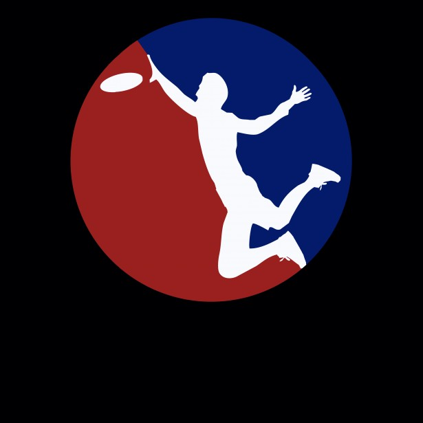
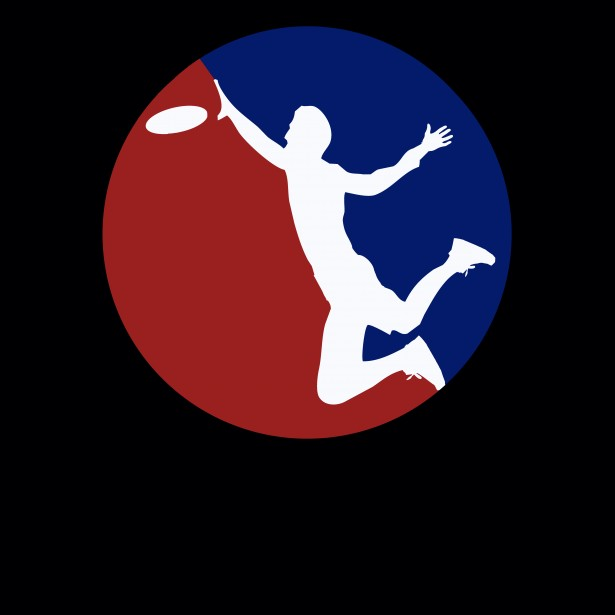

| ~Life of Satish~ | My Resume Outline | My Goals & Interests | |
Satish Vadivelu
Cypress, Texas
Objective:
- I am a highly motivated team player and visionary with proven communication skills seeking to cultivate my technical and business knowledge through a internship in Summer 2019. I'm open and willing to relocate.
- I would like to use my technical knowledge to bring about solutions for automation and different applications of a business
Education:
- Texas A&M University | College Station, TX
- Bachelors of Science in Industrial Distribution
- Expected Graduation on May 2021
Organizations:
- Texas A&M Ultimate Frisbee Sports Club | September 2017 - Present
- P.A.I.D | January 2019 - Present
- CarPool | February 2019 - Present
Projects:
- Calculator | Java | December 2018
- Temperature Quarrying | C++ | December 2018
- Store Backend | C++ | November 2018
- Mountain Paths | C++ | October 2018
- Tic Tac Toe | Java GUI | September 2018
- Paddle Ball | HTML, CSS, JavaScript | August 2018
Computer Languages:
- Proficient in Java and C++
- Intermediate knowledge of Python, HTML, CSS
- Familiar with SQL and JavaScript
Languages:
- Telugu
- Tamil
- Spanish (somewhat)
 

Feel free to download my resume in .docx or .pdf format.